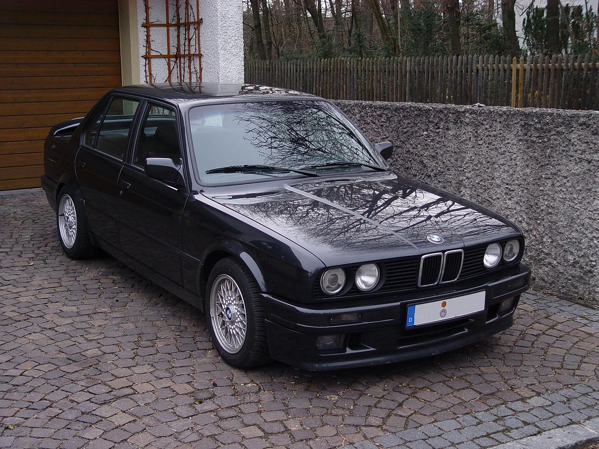

BMW M5 E30 (1985–1988) — это первое поколение M5, которое стало настоящей иконой среди спортивных седанов. Автомобиль сочетает в себе динамичные характеристики и удобство для повседневной эксплуатации.
| Параметр | Значение |
|---|---|
| Годы производства | 1985–1988 |
| Типы кузова | спортивный седан с кузовом 4-дверный |
| Двигатели | Бензиновые 3,5л модели S38 |
| Мощность | 286 л.с. |
| Привод | Задний |
| Трансмиссия | 5-ступенчатая механика |